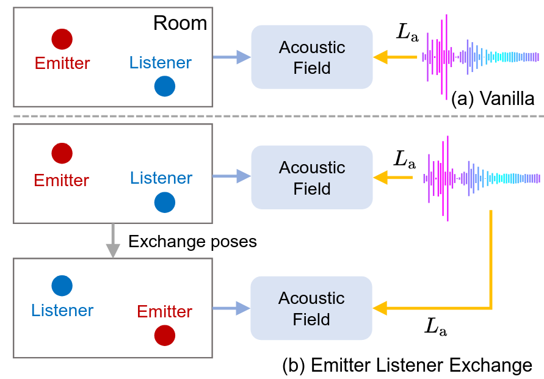
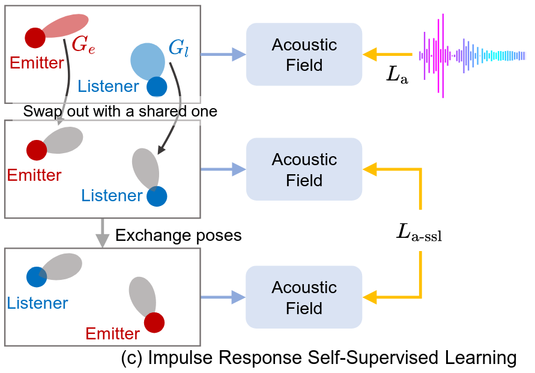

TL;DR: We propose Versa, a reciprocity-guided framework for resounding. Versa leverages physical wave symmetry to learn physically consistent acoustic fields even with sparse emitters.
A quick overview of the key idea: acoustic reciprocity as supervision for learning physically consistent acoustic fields under sparse emitter configurations.
Versa turns reciprocity into supervision: swapping emitter ↔ listener provides physically grounded training signals to improve generalization when emitter coverage is sparse.
Problem (Resounding). We want to synthesize impulse responses at new source positions, even when only a few emitters are observed during training. Naïvely training on sparse emitters often leads to physically inconsistent fields and poor generalization.
Key insight: Acoustic reciprocity. The propagation path is symmetric under swapping emitter and listener. This symmetry lets us “relabel” dense microphones as virtual emitters and generate additional supervisory signals.
Create physically valid virtual emitters by swapping emitter and listener poses. This transforms sparse emitter coverage into denser supervision for training.
When emitter/listener gain patterns break naïve symmetry, Versa-SSL aligns gain effects and enforces reciprocity consistency, enabling stable learning under real hardware differences.
Compare Vanilla, Versa (Ours), and GT side-by-side. Use the toggle to switch Ours between ELE and SSL when available.
@inproceedings{lanresounding,
title={Resounding Acoustic Fields with Reciprocity},
author={Lan, Zitong and Hao, Yiduo and Zhao, Mingmin},
booktitle={The Thirty-ninth Annual Conference on Neural Information Processing Systems}
}